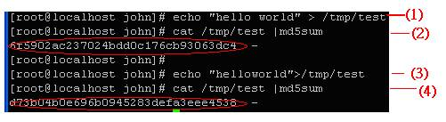

以 integrit 監控系統完整性

前言
相信大多數有經驗的程式設計師都同意一句話：「凡是人寫的程式，有 bug 是合乎預期的結果」，同樣的對於系統而言，「凡是系統，被入侵也是合乎預期的結果」，當防火牆或入侵偵測等相關的系統防線崩潰之後，主機型的入侵偵測系統往往就是系統的最後一道防線。在本文中，筆者將介紹一個簡易型的主機型入侵偵測系統（integrit），並搭配簡單的程式，來實作一個主機型偵測系統，當受保護的主機檔案被更動後（即檔案被駭客竄改），即發送 Email 通知管理者。什麼是入侵偵測系統
入侵偵測系統依偵測型式可分為網路型入侵偵測系統（Network-based Intrusion Detection System以下簡稱為 NIDS）及主機型入侵偵測系統（Host-based Intrusion Detection System）。如下所述：網路型偵測系統
NIDS 通常部署在網域入口上（gateway），利用 sniffer（竊聽）的方式，偵測網路上的封包並與惡意樣式資料庫比對，一旦發現有疑似入侵行為時即適時提出警告，此種入侵偵測軟體以 SNORT 為代表。
主機型偵測系統
HIDS 主要架設在被監控主機上，直接與系統結合，嚴密的監控系統內部的系統呼叫或資源。一旦發現有被入侵的可能即啟動相關的保護措施，HIDS 通常使用以單向 Hash（雜湊）函數來監控資源的變化。以下簡單說明單向 Hash 函數：
單向 Hash 函數指的是給與一個鍵值（key）,即可由此鍵值（key）藉由 Hash 函數取得唯一的雜湊值（vale）；F（KEY）=VALUE，如果有兩個以上的鍵值（KEY）可得到相同的雜湊值，即是指此 Hash 函數產生碰撞（collision）。單向 Hash（雜湊）定義如下所述：
假設：明文：M 雜湊函數：H 雜湊值：h = H（M），單向（ONE-WAY）HASH 函數需符合下列的功能：
對任意長度的明文輸入，需能產生固定長度的雜湊值輸出。
對於任何的明文一定可產生相對應的 HASH 值，且可利用硬體或軟體來產生。
需可從明文產生 HASH 值，但不能由 HASH 值反推而得到明文，如 h=H（“Hello!! World”）;假如得到 HASH 值 E23d21341DEFA789；在任何情況下都不能由 E23d21341DEFA789 反推而得到“Hello!! World”的明文這也就是單向（ONE-WAY）HASH的特性。
對於明文 M1，在計算上是無法找出另一個明文 M2 ≠ M1，使得 H（M1） = H（M2）。 也就是一個明文產生一個 HASH 碼；而不能兩個不同的明文產生相同的 HASH 碼。
若 H（M1） = H（M2），則 M1 = M2，若 H（M1）≠H（M2），則 M1≠M2。意即同一個明文產生同一個 HASH 碼，不同個明文產生不同的 HASH 碼。
下圖以 Linux 系統提供的 md5sum 指令為例：

1、產生內容為 hello world的 /tmp/test 檔案
2、利用 /tmp/test 檔案內容產生 md5 檢驗碼（稱為known）
3、修改 /tmp/test 檔（僅差別一個空白字元）
4、利用修改後的 /tmp/test 檔案內容產生 md5 檢驗碼（稱為current）
由上得知，即使檔案僅更動一個字元，所產生的檢驗碼也會完全不同。
而 HIDS 即可利用單向 Hash（雜湊）函數來驗證資源是否有更動過，工作原理如下所述：
針對欲監控的資源（如目錄，檔案等）完整掃描過一次，並以單向 HASH 的方式（如MD5），取得該資源的雜湊值，並將該雜湊值存入資料庫（稱為knowndb）
HIDS 定時的針對目前系統的現況，掃描相對應被監控的資源，並以單向 HASH 的方式（如MD5），取得該資源的雜湊值；並將該雜湊值存入資料庫（稱為 currdb）
HIDS 將雙方的雜湊值（knowndb 與 currdb）做一個比對，若一致則代表被監控的資源未被更動過，反之即代表被監控的資源已被更動，如下圖示：
安裝integrit
在開源碼社群中，如果談到 HIDS，可能第一個想到的是 tripwire（官方網址為 https://www.tripwire.org/），tripwire 是一個知名且功能強大的 HIDS 軟體工具，但相對的，其系統也較為龐大。在「殺雞焉用牛刀」的思維下，筆者將介紹另一種迷你的 HIDS 軟體「integrit」。integrit 主要功能在於比對檔案系統是否有不正常的更動情形。工作原理如下所述：
1、在系統剛建立完成時（乾淨的情況下），需先建立一個基準系統狀態資料庫（在此稱為 known database）。
2、在比對時，integrit 會先建立目前系統狀態資料庫（在此稱為 current database），並與 known database 進行比對。
3、如果基準系統狀態資料庫與目前系統狀態資料庫比對不一致，即表示目前的系統狀態有被更動,integrit 將會顯示出被更動的檔名或目錄。
由於 integrit 並未提供如 rpm 等包裝檔，所以要需利用原始檔直接編譯，請讀者至 https://integrit.sourceforge.net/ 取得最新版本的 integrit 程式（截至目前為止，筆者取得的版本為 4.1）。在下載後，可利用 configure && make && make install 來安裝 integrit。在完裝完成後，將會產生下列的程式：
integrit 在 utils 目錄下有提供 i-viewdb 來查看資料庫的內容，讀者可至 utils 目錄下，直接執行 make 即可編譯出 i-viewdb 執行檔。integrit 相關設定檔（/etc/integrit.conf）內容如下表：
讀者可假設 /usr/bin/ 內的程式是不會被更動的，所以需對 /usr/bin/ 目錄下的檔案做一份快照。請讀者在 /etc/integrit.conf 加入以下的設定：
known=/root/known.cdb #基準系統狀態資料庫
current=/root/current.cdb #目前系統狀態資料庫
root=/usr/bin #比對啟始目錄
首先，先使用 integrit 來建立基準資料庫，以下列指令建立基準系統狀態資料庫。
integrit -u -C /etc/integrit.conf –N /root/known.cdb #將 /usr/bin 做一份快照（其中 -u 為 update,-C 為使用 /etc/integrit.conf 設定檔,-N 則為產生目前系統狀態資料庫，筆者在測試的過程中，發現有一點很奇怪，根據 integrit 的用法，會發現 -N 參數原意是用來產生目前系統狀態資料庫，而另一個參數 -O 才是用來產生基準系統資料庫，但筆者測試結果發現使用 -O 參數並無任何作用，所以還是請讀者利用 -N 參數來建立基準系統狀態資料庫。）
建立完成後，讀者可利用 i-viewdb 來查看 integrit 的資料庫內容，利用 i-viewdb /root/known.cdb 指令來查看 known.cdb 的內容，建立好基準系統狀態資料庫後，我們將測試下列三種狀況：
檔案系統新增情況
1.利用 touch /usr/bin/a1 來新增一個檔案
2.利用 integrit -u -c -C /etc/integrit.conf 來檢查（其中 -c 的意思為 check，即為檢查）如下圖示：
3.integrit 一旦發現有新增檔案，即以 new 來表示該新增檔案
刪除情況
1.利用 rm –f /usr/local/apache2/htdocs/test/index.html 來刪除檔案
2.利用 integrit -u -c -C /etc/integrit.conf 來檢查，如下圖示：
3.integrit 一旦發現有被刪除檔案，即以 missing 來表示該被刪除檔案
修改情況
1.利用 touch /usr/local/apache2/htdocs/test/index.html（重新更動 index.html 的存取時間）
2.利用 integrit -u -c -C /etc/integrit.conf 來檢查，如下圖示：
3.integrit 一旦發現檔案被修改（在本例中為檔案存取時間被更動），即以 changed 來表示該檔案已被修改
關於email
Email 是一種命令列電子郵件寄發的工具，在本系統中即是利用此軟體，當系統檔案系統發生變化時，寄送電子郵件給管理者。安裝過程相當簡單，請至 https://www.cleancode.org/projects/email 下載最新版本。解壓縮後利用 ./configure && make && make install 安裝。在安裝完成後，設定預設的組態檔 （/etc/email.conf），設定下列選項：
SMTP_SERVER = ‘xxx.xxx' #SMTP 伺服器的所在 ip
MY_NAME = 'johnwu' #寄信者名稱
MY_EMAIL = ' This e-mail address is being protected from spambots. You need JavaScript enabled to view it ' #寄信者的 email
如果所使用的 smtp 伺服器需帳號及密碼的認證，需設定下列選項：
SMTP_AUTH_USER =[user name]
SMTP_AUTH_PASS =[passwd]
在此不多討論 email 的用法，詳細的使用就請讀者查閱相關文件說明
系統實作
設定步驟如下
1、確定系統欲保護的範圍（如檔案或目錄），在此以 /usr/bin/ 為例
2、設定 integrit 的組態檔（/etc/integrit.conf）如下：
known=/root/known.cdb #基準系統狀態資料庫
current=/root/current.cdb #目前系統狀態資料庫
root=/usr/bin #比對啟始目錄（由此目錄以下的檔案均列入保護
3、產生基準系統狀態資料庫（/root/known.cdb）
integrit -u -C /etc/integrit.conf -N /root/known.cdb
4、檢查檔案系統（/usr/bin）是否有變動
integrit -c -u -C /etc/integrit.conf
5、筆者利用 perl 寫了一個小的程式（/usr/bin/integrit.pl）來監控檔案系統是否有被更動，若有更動則寄發電子郵件通知管理者：
讀者可將此程式加入到cron排程中，如下：
*/1 * * * * /usr/bin/perl /usr/bin/integrit.pl
如此程式即會每分鐘定時的檢查系統，一旦發現系統的檔案系統（/usr/bin）有被異常的更動，即發出電子郵件通知管理者。